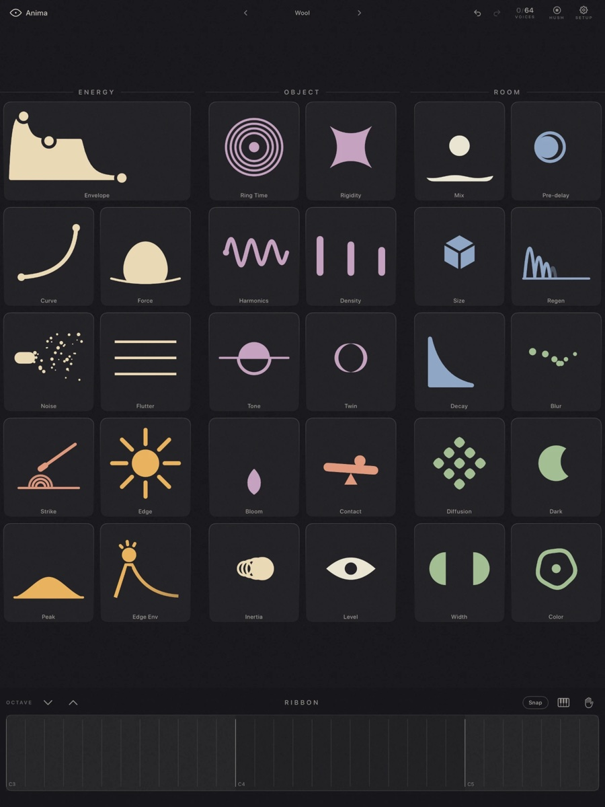
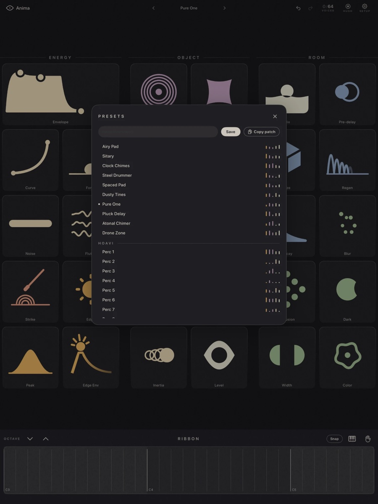
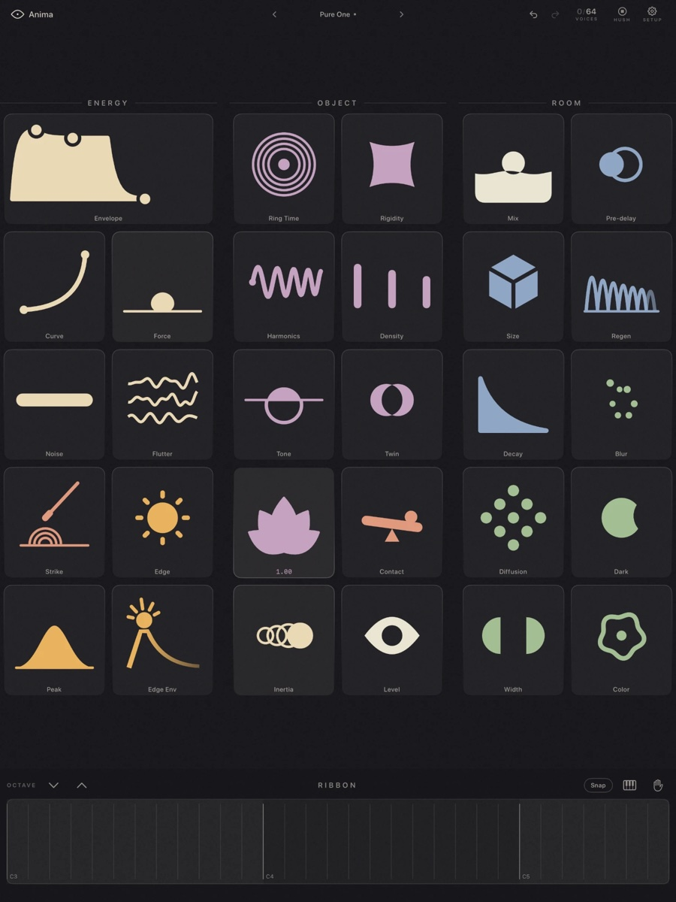
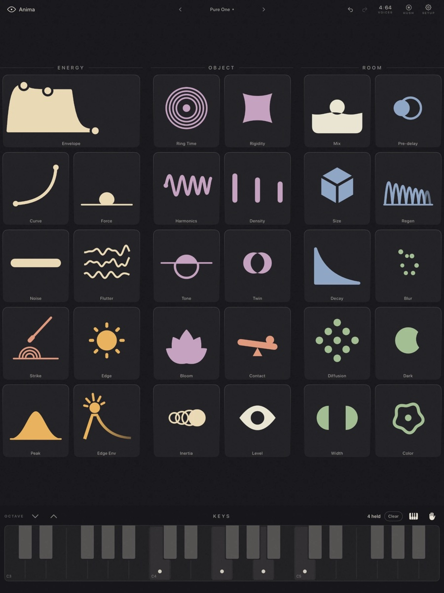
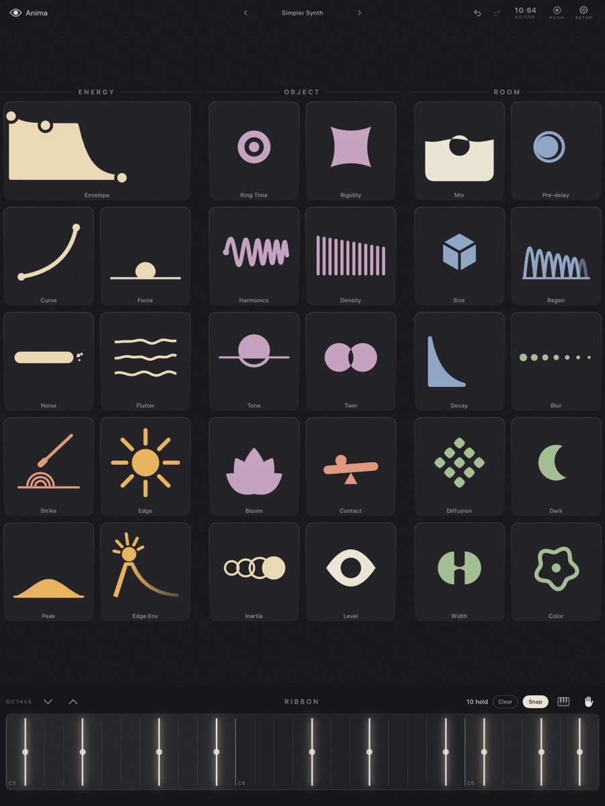

Out now on the App Store
Anima
A physical-modeling synthesizer for iPad. A breath excites a resonating object, and it rings out into a room that morphs from delay to reverb. It plays any tuning, which makes it the natural companion to Hexatone.





One surface, no pages →
What it is
Energy → object → room
Sound happens the way it happens in the physical world: a breath excites a resonating object, and the object rings out into a room. That is the whole interface, read left to right.
A modal resonator
Twenty-four coupled resonances per voice, computed from the note. Make it wood, glass, or metal, and stretch its partials from strings into bells. Push Inertia far enough and the note ignites and sings on its own breath.
Any tuning, exactly
Pitch is computed, never sampled, so nothing ties Anima to the usual twelve notes: it plays any tuning an MPE controller can send. Route Hexatone's MPE in and per-note microtuning just works, with nothing to configure.
A panel that comes alive
Every control is a bold glyph whose shape is its value, so the panel is a picture of the current sound. The controls are easy to grasp and leave plenty to discover; a knob rarely stops at what its label says. Load a preset and the whole surface morphs.
A room you can morph
One space, from a tight slap to an endless wash. Size sets the echo, Regen runs all the way into self-oscillation, and Blur melts the repeats into reverb.
Ribbon, keys, and MPE
A continuous-pitch ribbon for true microtonal play, and a three-octave piano when you want one. From a single voice up to sixty-four, standalone or as an AUv3 in AUM, Logic, GarageBand, and Cubasis, with MPE expression and a sustain pedal.
In short
A companion instrument, in the same family
Anima shares Hexatone's microtonal heart but stands on its own: a deep physical-modeling synth for iPad, dressed in a warm dusk palette of sand, clay, ochre, and sage. Breathy reeds, struck bells and metal, and tones no acoustic instrument could make. Fifty-five factory presets arrive in banks, including packs by Red Sky Lullaby and Hoavi, and you can save your own or copy any sound as text to send to a friend. One price, no in-app purchases, no subscription.
Updates
Get in touch
Questions, feedback, or press: I'd love to hear from you.